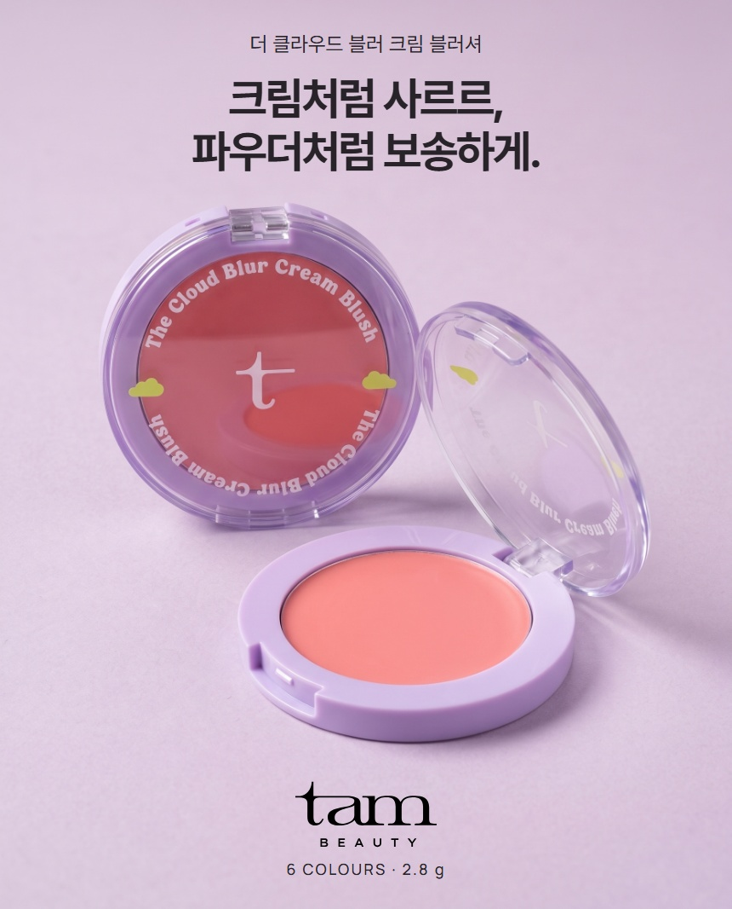

THE CLOUD BLUR CREAM BLUSHER
더 클라우드 블러
크림 블러셔.
크림의 부드러운 발림,
파우더의 보송한 마무리.

BLUSH COLOUR SHADES
여섯 가지 컬러를
한눈에.

쉐이크

쉐이크

쉐이크

쉐이크

쉐이크

쉐이크


피부색·사용량·조명 및 화면 환경에 따라
발색이 다르게 보일 수 있습니다.
COLOUR ON CHEEKS
볼 위에서 만나는
여섯 가지 컬러.

01
백도
쉐이크
부드러운 피치 핑크

02
구아바
쉐이크
차분한 로지 핑크

03
아사이베리
쉐이크
화사한 라벤더 핑크

04
파파야
쉐이크
따뜻한 코랄 오렌지

05
용과
쉐이크
선명한 핑크

06
살구
쉐이크
차분한 살구 베이지
피부색·사용량·조명 및 화면 환경에 따라
발색이 다르게 보일 수 있습니다.
CREAM TO POWDER
펴 바를 땐 부드럽게,
마무리는 보송하게.

부드러운 발림
보송한 마무리
FOUR BOTANICAL OILS
네 가지
식물성 오일 함유.

살구씨오일
동백나무씨오일
올리브오일
서양자두씨오일
원료를 표현한 연출 이미지입니다.
HOW TO USE
소량으로 얇게,
경계는 톡톡.
손끝이나 도구로 얇게 펴 바른 뒤
경계를 가볍게 두드려 주세요.

VEGAN FORMULA
탐뷰티의
비건 포뮬러.


CHECK POINT
개봉 후 12개월 이내
사용해 주세요.
개봉 전 사용 기한은 36개월입니다.
제품 정보 · 전성분
| 용량 및 중량 | 2.8 g I 0.09oz |
|---|---|
| 제품 주요 사양 | 모든 피부 |
| 사용 기한 | 개봉 전 36개월 / 개봉 후 12개월 |
| 사용 방법 | 손가락이나 도구를 이용해 생기가 필요한 부분에 얇게 펴 바르고 가볍게 두드려 밀착시켜줍니다. |
| 화장품책임 판매업자 | 주식회사 에이위즈 |
| 제조국 | 한국 |
| 품질보증 기준 | 본 제품에 이상이 있을 경우, 공정거래 위원회 고시 소비자 분쟁 해결 기준에 따라 보상해 드립니다. |
| 탐뷰티 고객상담실 | 1668-0868( 수신자 요금부담) |
전성분
01 백도 쉐이크
아이소노닐아이소노나노에이트, 실리카, 티타늄디옥사이드, 폴리글리세릴-2트라이아이소스테아레이트, 마이카, 네오펜틸글라이콜다이카프릴레이트/다이카프레이트, 합성왁스, 폴리하이드록시스테아릭애씨드, 세레신, 피이지-10다이메티콘, 메티콘, 황색5호, 레시틴, 글리세릴카프릴레이트, 알루미늄하이드록사이드, 아이소스테아릭애씨드, 아이소프로필미리스테이트, 에틸헥실팔미테이트, 에틸헥실글리세린, 폴리글리세릴-3폴리리시놀리에이트, 적색104호의(1), 토코페릴아세테이트, 적색202호, 동백나무씨오일, 살구씨오일, 올리브오일, 서양자두씨오일
02 구아바 쉐이크
아이소노닐아이소노나노에이트, 실리카, 티타늄디옥사이드, 폴리글리세릴-2트라이아이소스테아레이트, 마이카, 네오펜틸글라이콜다이카프릴레이트/다이카프레이트, 합성왁스, 폴리하이드록시스테아릭애씨드, 세레신, 피이지-10다이메티콘, 메티콘, 레시틴, 황색5호, 글리세릴카프릴레이트, 알루미늄하이드록사이드, 아이소스테아릭애씨드, 아이소프로필미리스테이트, 에틸헥실팔미테이트, 적색202호, 에틸헥실글리세린, 폴리글리세릴-3폴리리시놀리에이트, 황색4호, 다이아이소스테아릴말레이트, 흑색산화철, 토코페릴아세테이트, 살구씨오일, 동백나무씨오일, 올리브오일, 서양자두씨오일
03 아사이베리 쉐이크
아이소노닐아이소노나노에이트, 실리카, 티타늄디옥사이드, 폴리글리세릴-2트라이아이소스테아레이트, 마이카, 네오펜틸글라이콜다이카프릴레이트/다이카프레이트, 합성왁스, 폴리하이드록시스테아릭애씨드, 세레신, 적색104호의(1), 피이지-10다이메티콘, 메티콘, 레시틴, 글리세릴카프릴레이트, 알루미늄하이드록사이드, 아이소스테아릭애씨드, 아이소프로필미리스테이트, 에틸헥실팔미테이트, 에틸헥실글리세린, 폴리글리세릴-3폴리리시놀리에이트, 황색산화철, 청색1호, 토코페릴아세테이트, 동백나무씨오일, 살구씨오일, 올리브오일, 서양자두씨오일
04 파파야 쉐이크
아이소노닐아이소노나노에이트, 실리카, 티타늄디옥사이드, 폴리글리세릴-2트라이아이소스테아레이트, 마이카, 네오펜틸글라이콜다이카프릴레이트/다이카프레이트, 합성왁스, 폴리하이드록시스테아릭애씨드, 세레신, 피이지-10다이메티콘, 황색5호, 메티콘, 레시틴, 글리세릴카프릴레이트, 알루미늄하이드록사이드, 아이소스테아릭애씨드, 아이소프로필미리스테이트, 에틸헥실팔미테이트, 적색104호의(1), 에틸헥실글리세린, 폴리글리세릴-3폴리리시놀리에이트, 황색산화철, 적색202호, 토코페릴아세테이트, 동백나무씨오일, 살구씨오일, 올리브오일, 서양자두씨오일
05 용과 쉐이크
아이소노닐아이소노나노에이트, 실리카, 티타늄디옥사이드, 폴리글리세릴-2트라이아이소스테아레이트, 마이카, 네오펜틸글라이콜다이카프릴레이트/다이카프레이트, 합성왁스, 폴리하이드록시스테아릭애씨드, 세레신, 피이지-10다이메티콘, 메티콘, 레시틴, 황색5호, 글리세릴카프릴레이트, 알루미늄하이드록사이드, 적색202호, 아이소스테아릭애씨드, 아이소프로필미리스테이트, 에틸헥실팔미테이트, 에틸헥실글리세린, 폴리글리세릴-3폴리리시놀리에이트, 적색201호, 토코페릴아세테이트, 살구씨오일, 동백나무씨오일, 올리브오일, 서양자두씨오일
06 살구 쉐이크
아이소노닐아이소노나노에이트, 실리카, 티타늄디옥사이드, 폴리글리세릴-2트라이아이소스테아레이트, 마이카, 네오펜틸글라이콜다이카프릴레이트/다이카프레이트, 합성왁스, 폴리하이드록시스테아릭애씨드, 세레신, 피이지-10다이메티콘, 황색5호, 메티콘, 레시틴, 글리세릴카프릴레이트, 알루미늄하이드록사이드, 황색산화철, 아이소스테아릭애씨드, 아이소프로필미리스테이트, 에틸헥실팔미테이트, 에틸헥실글리세린, 폴리글리세릴-3폴리리시놀리에이트, 적색202호, 토코페릴아세테이트, 살구씨오일, 동백나무씨오일, 올리브오일, 서양자두씨오일